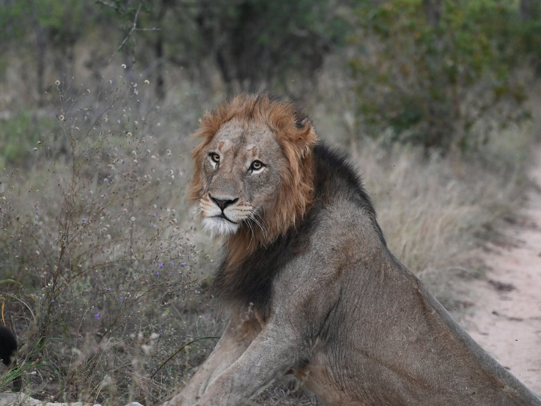
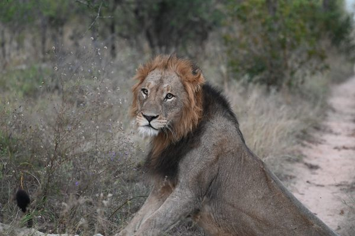
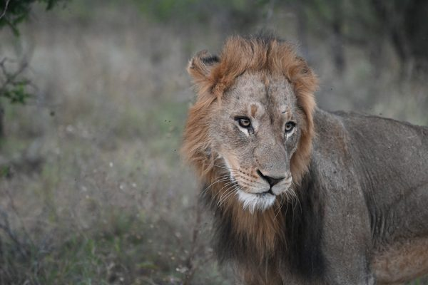
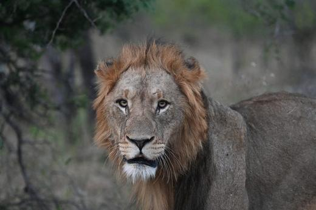
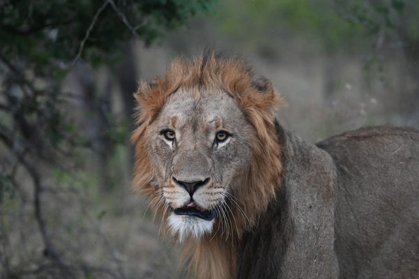
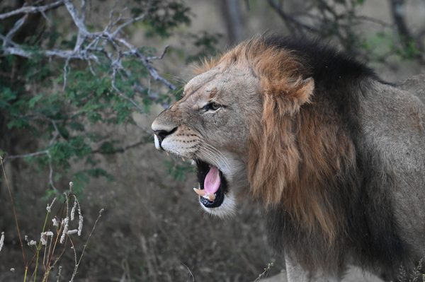

As the amber light of dusk spills across the Serengeti, a deep, guttural roar tears through the stillness — a sound that carries eight kilometers and stops every living creature in its tracks. The lion, Africa's most formidable apex predator, commands the plains not merely through brute strength but through an intricate web of alliance, ambush, and ancestral dominance that has evolved over hundreds of thousands of years. To witness a pride on the move is to glimpse the raw, unedited machinery of the wild — power distilled into tawny muscle and unblinking golden eyes.

Habitat & Range
Lions once roamed across Africa, southern Europe, and into Asia as far east as India, but today their kingdom has contracted dramatically. They inhabit the grasslands, open woodlands, and semi-arid scrublands of sub-Saharan Africa, with stronghold populations anchored in the great ecosystems of the Serengeti-Mara, the Okavango Delta, Kruger National Park, and the Luangwa Valley. A critically endangered remnant population of Asiatic lions — numbering roughly 700 individuals — clings to survival in India's Gir Forest, a last whisper of the species' former transcontinental reign. Lions are creatures of open landscapes, relying on scattered cover and the vastness of the savanna to execute their cooperative hunts, though they adapt surprisingly well to the fringes of wetlands, dry riverbeds, and even the stark dunes of Namibia's Skeleton Coast.
Behaviour
Lions are the only truly social cats, living in prides that typically consist of two to fifteen related females, their cubs, and a coalition of two to four males who have fought — often brutally — for the right to reign. The females are the pride's engine: they hunt cooperatively in coordinated formations, flanking herds of zebra, wildebeest, and buffalo with a tactical precision that borders on military strategy. Males, though often cast as indolent, serve a critical role as defenders of territory and pride, engaging in savage battles with rival coalitions that can leave combatants scarred or dead. Cubs are raised communally, with females nursing each other's young, while males new to a pride may commit infanticide to bring females back into estrus — a ruthless calculus of genetic survival. Their social bonds are reinforced through elaborate greeting rituals involving head-rubbing and low moaning vocalizations, and a pride at rest, draped over one another in the shade of an acacia, presents one of the most intimate portraits of kinship in the animal kingdom.
🔴 Classified as Vulnerable by the IUCN, with the West African subpopulation listed as Critically Endangered, lions face escalating threats from habitat loss and fragmentation, human-wildlife conflict with pastoralist communities, prey base depletion through bushmeat poaching, and the insidious trade in lion bones fueling demand in traditional medicine markets — their numbers having plummeted from an estimated 200,000 a century ago to fewer than 25,000 wild individuals today.
Fast Facts
Encounter
Gallery — Top Shots




